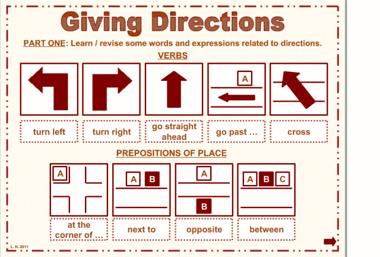

 Click to listen
Click to listen
| Turn left | vire à esquerda | Turn right | vire à direita |
| Go straight ahead | siga em frente | Go past the | siga para além de |
| Cross | atravesse | At the corner of | at the corner of |
| Next to | ao lado de | Opposite | oposto |
| between | entre |
1)
2)
3)
4)
5)
| travel | viagem | airport | aeroporto |
| arrivel | chegada | baggage | bagagem |
| baggage claim | reclamação de bagagem | book a flight | agendar um voo |
| ticket | bilhete | check-in | check-in |
| credit card | cartão de crédito | passenger | passageira |
| customs | alfândega | flight | voo |
| hostess | recepcionista | hotel | hotel |
| take off | decolar | land | pousar |
| map | mapa | metal detector | detector de metal |
| passport | passaporte | visa | visto |
| compass | bússola | plane | avião |
| caravan | caravana | cruise | cruzeiro |
| route | rota | tour | tour |
| safari | safári | taxi | taxi |
1)
2)
3)
4)
5)
- 1. I'm getting better and better.
Estou ficando cada vez melhor. - 2. I'm getting ready to go.
Estou me preparando para ir. - 3. She´s getting a cold.
Ela está ficando resfriada. - 4. He´s getting married.
Ele vai se casar. - 5. They´re getting tired.
Eles estão ficando cansados. - 6. She´s trying to explain herself.
Ela está tentando se explicar. - 7. I'm trying new food.
Estou experimentando comida nova. - 8. I'm trying to eat healthy.
Estou tentando me alimentar de forma saudável. - 9. I'm trying to understand you.
Estou tentando entender você. - 10. I'm trying to get a new job.
Estou tentando arrumar um novo emprego. - 11. How about your new job?
Que tal o seu novo emprego? - 12. How about your vacation?
E as suas férias? - 13. How about his new ideas?
E as novas ideias dele? - 14. How about another drink?
Que tal outra bebida? - 15. How about we go to the cinema?
Que tal irmos ao cinema? - 16. How dare you call me ugly!
Como você ousa me chamar de feia! - 17. How dare you speak to your mom like that!
Como você ousa falar assim com sua mãe! - 18. How dare you lie to me!
Como você ousa mentir para mim! - 19. How dare you be here?
Como você ousa estar aqui? - 20. How dare you touch me!
Como você ousa me tocar!
Click on the colored words to listen.
-
Look after
- (take care of ) - cuidar
I will have to look after my parents.
Vou ter que cuidar dos meus pais. -
Look forward
- (to be excited about future) - estar ansioso, animado
She's looking forward to seeing her family again,after this long time away.
Ela está ansiosa para ver sua família novamente, depois de tanto tempo longe. -
Make something up
- (tell a lie) - mentir, inventar uma história
It turns out that the reporter simply made up the story.
Acontece que o repórter simplesmente inventou a história.